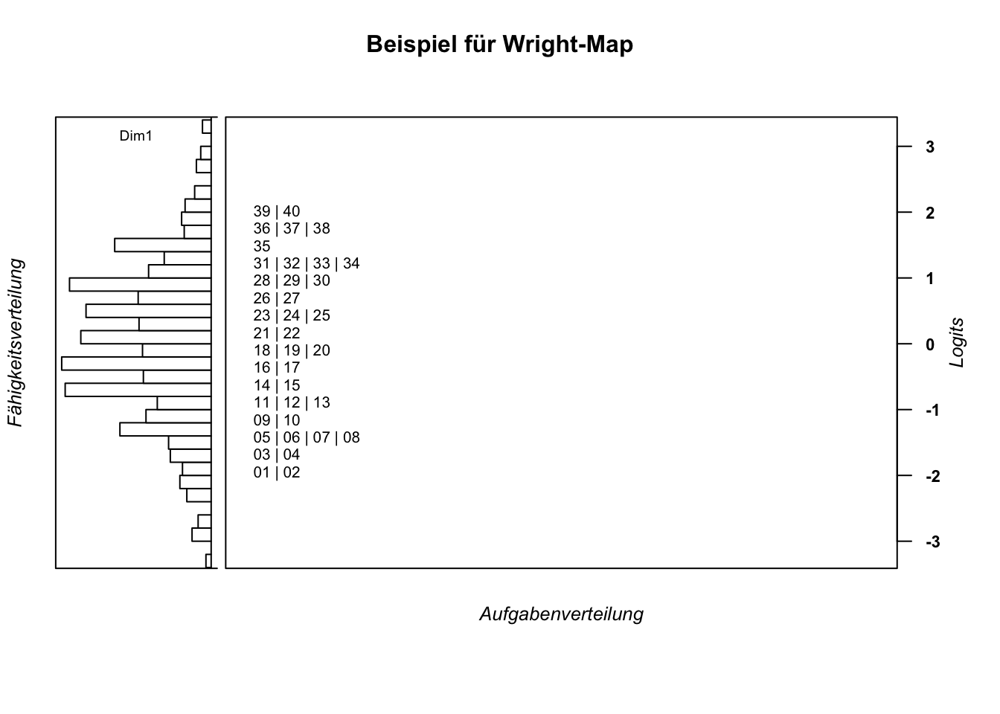

3 Item Analyse
3.1 Laden der benötigten Pakete und des Datensatzes
library(TAM) # TAM-Paket## Loading required package: CDM## Loading required package: mvtnorm## **********************************
## ** CDM 7.5-15 (2020-03-10 14:19:21)
## ** Cognitive Diagnostic Models **
## **********************************## * TAM 3.5-19 (2020-05-05 22:45:39)library(WrightMap) # zur Erzeugung von Wright-Maps
library(RColorBrewer) # für schönere Farben in den Wright-Maps
data(data.sim.rasch) # data.sim.rasch: 2000 persons, 40 itemsDas R-Paket "TAM" (Robitzsch, A., Kiefer, T., & Wu, M. (2019). TAM: Test Analysis Modules. R package version 3.3-10. https://CRAN.R-project.org/package=TAM) ist freie Software unter der Lizenz GNU General Public License.
3.2 Modellschätzung
Der Befehl erzeugt ein Listen-Objekt mit vielen Einträgen. Folgend wird ein Dataframe-Objekt aus dieser Liste ausgewählt und ausgegeben. Es enthält verschiedene Spalten mit deskriptiven Kennwerten:
mod1PL$item## item N M xsi.item AXsi_.Cat1 B.Cat1.Dim1
## I1 I1 2000 0.8270 -1.95906755 -1.95906755 1
## I2 I2 2000 0.8145 -1.85707784 -1.85707784 1
## I3 I3 2000 0.8000 -1.74448741 -1.74448741 1
## I4 I4 2000 0.7860 -1.64079925 -1.64079925 1
## I5 I5 2000 0.7725 -1.54485365 -1.54485365 1
## I6 I6 2000 0.7710 -1.53441512 -1.53441512 1
## I7 I7 2000 0.7430 -1.34668186 -1.34668186 1
## I8 I8 2000 0.7435 -1.34992594 -1.34992594 1
## I9 I9 2000 0.7295 -1.26040238 -1.26040238 1
## I10 I10 2000 0.6945 -1.04694135 -1.04694135 1
## I11 I11 2000 0.6905 -1.02335166 -1.02335166 1
## I12 I12 2000 0.6615 -0.85638275 -0.85638275 1
## I13 I13 2000 0.6515 -0.80026553 -0.80026553 1
## I14 I14 2000 0.6415 -0.74479292 -0.74479292 1
## I15 I15 2000 0.6000 -0.52027584 -0.52027584 1
## I16 I16 2000 0.5765 -0.39628492 -0.39628492 1
## I17 I17 2000 0.5720 -0.37273730 -0.37273730 1
## I18 I18 2000 0.5445 -0.22987456 -0.22987456 1
## I19 I19 2000 0.5205 -0.10621935 -0.10621935 1
## I20 I20 2000 0.5100 -0.05228424 -0.05228424 1
## I21 I21 2000 0.4925 0.03753652 0.03753652 1
## I22 I22 2000 0.4795 0.10429854 0.10429854 1
## I23 I23 2000 0.4350 0.33421807 0.33421807 1
## I24 I24 2000 0.4180 0.42310019 0.42310019 1
## I25 I25 2000 0.3995 0.52082702 0.52082702 1
## I26 I26 2000 0.3770 0.64147566 0.64147566 1
## I27 I27 2000 0.3765 0.64418273 0.64418273 1
## I28 I28 2000 0.3395 0.84834994 0.84834994 1
## I29 I29 2000 0.3235 0.93942118 0.93942118 1
## I30 I30 2000 0.3100 1.01785330 1.01785330 1
## I31 I31 2000 0.2935 1.11597708 1.11597708 1
## I32 I32 2000 0.2900 1.13714364 1.13714364 1
## I33 I33 2000 0.2620 1.31159123 1.31159123 1
## I34 I34 2000 0.2615 1.31479716 1.31479716 1
## I35 I35 2000 0.2255 1.55581073 1.55581073 1
## I36 I36 2000 0.2165 1.61968818 1.61968818 1
## I37 I37 2000 0.2050 1.70383560 1.70383560 1
## I38 I38 2000 0.1990 1.74896980 1.74896980 1
## I39 I39 2000 0.1755 1.93517136 1.93517136 1
## I40 I40 2000 0.1620 2.05013862 2.05013862 1N: Anzahl an Personen, die das jeweilige Item bearbeitet haben.
M: Deskriptive Schwierigkeit des Items (\(M = \frac{N_{korrekt}}{N_{gelöst}}\)).
xsi.item: xsi wird ausgesprochen wie geschrieben und bezieht sich auf den griechischen Buchstaben. Der \(\xi\)-Parameter ist die, mit dem Modell geschätzte, Aufgabenschwierigkeit auf der Skala von \(-\infty\) bis \(\infty\) mit 0 als Mittelwert. Übliche Werte in der Praxis liegen zwischen -3 bis 3. Eine Aufgabe mit Schwierigkeit \(\xi=1\) ist dabei schwerer als eine Aufgabe mit Schwierigkeit \(\xi=0\). Oft findet man den Schwierigkeitsparameter auch unter anderen griechischen Buchstaben in der Literatur, z. B. \(\delta\) oder \(\beta\). TAM übernimmt die Notation mit \(\beta\) unter der Bezeichnung IRT parametrization. Siehe dazu den folgenden Output.
mod1PL$item_irt## item alpha beta
## 1 I1 1 -1.95906755
## 2 I2 1 -1.85707784
## 3 I3 1 -1.74448741
## 4 I4 1 -1.64079925
## 5 I5 1 -1.54485365
## 6 I6 1 -1.53441512
## 7 I7 1 -1.34668186
## 8 I8 1 -1.34992594
## 9 I9 1 -1.26040238
## 10 I10 1 -1.04694135
## 11 I11 1 -1.02335166
## 12 I12 1 -0.85638275
## 13 I13 1 -0.80026553
## 14 I14 1 -0.74479292
## 15 I15 1 -0.52027584
## 16 I16 1 -0.39628492
## 17 I17 1 -0.37273730
## 18 I18 1 -0.22987456
## 19 I19 1 -0.10621935
## 20 I20 1 -0.05228424
## 21 I21 1 0.03753652
## 22 I22 1 0.10429854
## 23 I23 1 0.33421807
## 24 I24 1 0.42310019
## 25 I25 1 0.52082702
## 26 I26 1 0.64147566
## 27 I27 1 0.64418273
## 28 I28 1 0.84834994
## 29 I29 1 0.93942118
## 30 I30 1 1.01785330
## 31 I31 1 1.11597708
## 32 I32 1 1.13714364
## 33 I33 1 1.31159123
## 34 I34 1 1.31479716
## 35 I35 1 1.55581073
## 36 I36 1 1.61968818
## 37 I37 1 1.70383560
## 38 I38 1 1.74896980
## 39 I39 1 1.93517136
## 40 I40 1 2.05013862AXsi_.Cat1: Schwierigkeit, gegeben, dass das Item verschiedenen Personengruppen und/oder Testheften zugeordnet wurde und unter den jeweiligen Bedingungen unterschiedlich erfolgreich bearbeitet wurde. Da hier nur ein eindimensionales Modell ohne weitere Bedingungen berechnet wurde, entspricht der Wert dem \(\xi\)-Parameter.
B.Cat1.Dim1: Steigungsparameter. Im eindimensionalen 1-PL-Modell wird der B-Parameter nicht berechnet, sondern auf \(B=1\) fixiert. Oft findet man den Steigungsparameter auch unter der Bezeichnung \(\alpha\) (siehe Output oben zu xsi.item).
3.3 Erzeugen einer Wright-Map
thetas_1pl <- tam.wle(mod1PL) # WLEs berechnen## Iteration in WLE/MLE estimation 1 | Maximal change 0.8281
## Iteration in WLE/MLE estimation 2 | Maximal change 0.4335
## Iteration in WLE/MLE estimation 3 | Maximal change 0.0883
## Iteration in WLE/MLE estimation 4 | Maximal change 7e-04
## Iteration in WLE/MLE estimation 5 | Maximal change 0
## ----
## WLE Reliability= 0.894item_xsis_1pl <- mod1PL$xsi$xsi # Itemschwierigkeiten separieren
wrightMap(thetas_1pl$theta, item_xsis_1pl,
item.side = itemClassic,
main.title = "Beispiel für Wright-Map",
axis.persons = "Fähigkeitsverteilung",
axis.items = "Aufgabenverteilung")
## [,1]
## [1,] -1.95901708
## [2,] -1.85702665
## [3,] -1.74443543
## [4,] -1.64074652
## [5,] -1.54480023
## [6,] -1.53436162
## [7,] -1.34662700
## [8,] -1.34987110
## [9,] -1.26034689
## [10,] -1.04688427
## [11,] -1.02329441
## [12,] -0.85632426
## [13,] -0.80020663
## [14,] -0.74473359
## [15,] -0.52021484
## [16,] -0.39622299
## [17,] -0.37267520
## [18,] -0.22981140
## [19,] -0.10615527
## [20,] -0.05221976
## [21,] 0.03760166
## [22,] 0.10436417
## [23,] 0.33428538
## [24,] 0.42316815
## [25,] 0.52089569
## [26,] 0.64154518
## [27,] 0.64425227
## [28,] 0.84842093
## [29,] 0.93949280
## [30,] 1.01792547
## [31,] 1.11604992
## [32,] 1.13721663
## [33,] 1.31166540
## [34,] 1.31487135
## [35,] 1.55588652
## [36,] 1.61976438
## [37,] 1.70391234
## [38,] 1.74904684
## [39,] 1.93524957
## [40,] 2.05021754